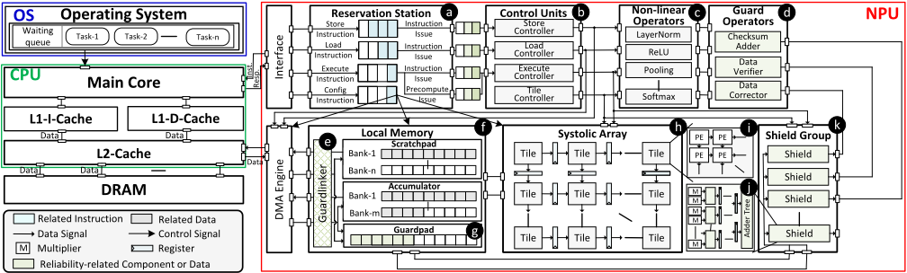
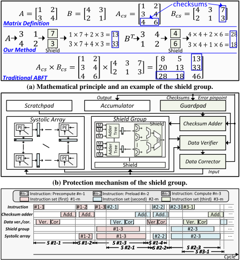
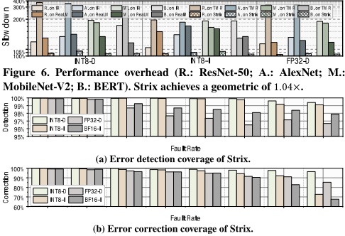
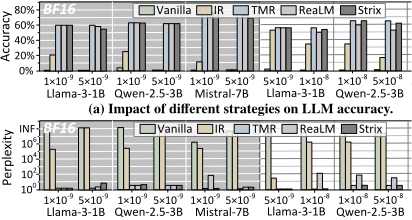

StriX: Re-Thinking NPU Reliability from a System Perspective
StriX：从系统视角重新思考 NPU 可靠性
简介
面向安全关键场景中 NPU 硬件故障日益频繁、而现有方案要么粗粒度 TMR 开销过高、要么只保护单一部件的问题，论文提出全栈 NPU 可靠性框架 StriX。作者先通过错误注入量化模型对错误率与错误位置的容忍度（尾数位几乎不敏感、符号/指数位高度敏感），再沿推理流水线将 NPU 重划分为寄存器、本地存储、systolic array 与非线性算子四类模块，分别施加 SEC-DED ECC、双向量 checksum guard（guardpad/guardlinker）、与阵列解耦的 ABFT shield group 以及代数不变量校验/冗余副本，并辅以 ISA 扩展打通软硬件协同。在基于开源 Gemmini、20 节点 VU19P FPGA 集群的平台上，StriX 几何平均 slowdown 仅 1.04×，典型错误率下检测/纠正覆盖率分别超过 97%/95%，检测延迟为亚微秒级，工业规模配置下面积/功耗开销仅 8.7%/16.8%（TSMC 28nm 综合），且新增逻辑不恶化原有关键路径。
问题
DNN/LLM 加速器在自动驾驶等安全关键领域大规模部署，工艺缩放与模型规模扩大使位级故障更频繁。现有可靠性方案存在明显缺口：算法级方法（训练注入、投票、改激活函数）无直接错误检测；指令级冗余（IR）需逐层分析、手动改码且冗余执行开销大；微架构级工作只覆盖单部件（如 PE）或单故障模型，缺乏对系统级数据流与时序耦合的统一刻画；而满足 ISO-26262 等安全标准系统级检测要求的 TMR 因粗粒度全系统保护开销过高。论文要解决的是：如何以系统视角精确刻画 NPU 各模块故障模式，并在严格 PPA 预算内实现高覆盖、低减速、可端到端验证的故障定位、检测与纠正。
方法
StriX 遵循 'analyse-first, protect-exactly' 原则：先用错误注入框架分析 DNN/LLM 在 FP32/INT8/BF16 下的错误率阈值与位敏感性，据此沿系统推理流水线把 NPU 重划分为四类模块并匹配差异化保护：(1) 指令/控制通路关键寄存器用轻量 SEC-DED ECC；(2) 本地存储（scratchpad/accumulator）用双向量 checksum 方案，guardpad 存校验和、guardlinker 绑定数据并记录故障位置，校验逻辑与存储解耦、沿高带宽访问路径按块粒度流水化，支持多位错检测/纠正与永久故障定位；(3) systolic array 用硬件重设计的 ABFT shield group，与阵列完全解耦、离线配置（shield 数 K 按 σ≤L_SA 求解）、四段流水线隐藏保护延迟，加法树深度对齐原生关键路径；(4) 非线性算子按代数不变量校验（LayerNorm/Softmax）或冗余副本（ReLU/GELU/Pooling）；同时扩展 ISA（precompute 子指令、mvout_error_block 等）使 runtime 可调度保护流水并报告受影响块。
关键结果
性能：Strix slowdown 为 1.02×–1.07×，几何平均 1.04×，优于 TMR（1.83×–3.68×）、IR（1.13×–1.95×）与 SOTA 方案 ReaLM（1.22×–1.59×）
检测覆盖率：INT8-D/INT8-I 超过 99%；FP32-D/BF16-I 在非极端错误率（≤10^-6）下超过 97%
纠正覆盖率：典型错误率（≤10^-6）下四种配置均超过 95%
检测延迟：500MHz 下各新增组件最坏检测延迟为亚微秒级，其中 systolic array 因事后校验（post-verification）延迟最高
硬件开销（Synopsys Design Compiler v2019.12、TSMC 28nm）：INT8-I 为 8.7% 面积/16.8% 功耗，INT8-D 为 20.7%/23.2%，FP32-D 为 10.2%/21.3%；面积开销主要来自 guardpad
关键路径：Strix 新增组件在所有配置（INT8/FP32、不同 PE/tile）下最高频率均高于 Gemmini，关键路径仍由原 NPU 决定
平台与配置：20 节点 AMD Virtex UltraScale+ VU19P FPGA 集群，四种配置最大至 128×128 systolic array（4×4 PE/tile）；BF16-I 因 FPGA 资源限制在 PyTorch 中按 Spike 建模行为仿真
创新点
区别于三类已有工作：算法级方法无直接错误检测且跨模型扩展性存疑；指令级冗余需逐层分析、手动改码、冗余执行开销大；微架构级工作只保护单部件或单故障模型，缺乏系统级数据流与时序耦合的统一刻画。与系统级 TMR 的粗粒度全系统保护相比，StriX 沿推理流水线按模块故障特征做细粒度差异化保护，并以 ISA 扩展打通硬件机制与软件栈；与 SOTA ReaLM 的'检测+选择性回滚'不同，其 shield group 与阵列完全解耦、可在线纠正且能处理永久故障（回滚类方案在永久故障下会失效），并通过流水线与配置策略将保护延迟隐藏在阵列执行窗口内。
团队参考意义
相关度级别：medium
命中能力域：2.2 RTL 设计与实现 | 2.4 设计验证方法学
理由：论文主题是 NPU 计算可靠性，不属于团队的存储/高速互连 IP 产品域，因此对 2.1（内存/互连 IP 架构）不构成直接命中；但其工程主体落在 2.2 与 2.4 的技术面上：可综合 RTL 保护机制设计（SEC-DED ECC、checksum guard、ABFT shield group）、逻辑综合与时序收敛（加法树深度对齐原生关键路径、多轮综合测最高频率证明新增逻辑不决定关键路径、DC+TSMC 28nm 面积/功耗评估），以及故障注入方法学（瞬态+永久故障，经自定义 ISA 与强制信号实现）、检测/纠正覆盖率度量与 FPGA 集群验证。这些方法对本团队有借鉴价值：存储控制器与 UCIe IP 中的 ECC/CRC/retry 等 RAS 特性设计与错误路径验证可参考其'校验逻辑与数据通路解耦、沿高带宽路径块粒度流水化校验、错误位置日志辅助永久故障定位'的设计模式；但 ABFT、非线性算子校验等 NPU 专属机制与团队产品无直接关联，故整体评为 medium 而非 high。
建议动作：作为方法参考存档
中文全文
arXiv:2604.10484v1 [cs.AR] 2026年4月12日
Strix: Re-thinking NPU Reliability from a System Perspective
Jiapeng Guan † ，Jie Zhang § ，Hao Zhou † ，Ran Wei ‡ ，Dean You § ，Hui Wang § ，Yingquan Wang † ，Tinglue Wang § ，
Xudong Zhao † ，Jing Li 与 Zhe Jiang §∗
† 大连理工大学，中国。 § 东南大学，中国。 ‡ 兰卡斯特大学，英国。 ¶ 新泽西理工学院，美国。
Abstract
深度神经网络（DNN）与大语言模型（LLM）日益依赖硬件加速器，安全关键领域也不例外；与此同时，工艺微缩和不断增长的模型复杂度使硬件故障愈发频繁。现有的系统级机制通常将神经网络处理器（NPU）视为单一整体单元，采用粗粒度复制，带来难以承受的性能与硬件开销，导致可靠性需求与可部署方案之间存在差距。为弥合这一差距，我们提出了 Strix——一个构建于开源片上系统（SoC）之上的全栈 NPU 可靠性框架，涵盖微架构、指令集架构（ISA）与编程方法。Strix 沿系统推理流水线对 NPU 进行重新划分，识别主要失效模式，并附加针对性的安全保障措施，以仅 1.04× 的减速和极小的硬件开销，实现亚微秒级的故障定位、错误检测与纠正。
1 Introduction
深度神经网络（DNN）与大语言模型（LLM）能够提供最先进（SOTA）的精度，但计算代价高昂 [4]。现代模型的参数量达数十亿乃至数万亿，每次推理所执行的乘加（Multiply-and-Accumulate, MAC）运算数量高出多个数量级 [22, 36]，这促使片上系统（SoC）为加速器（例如神经网络处理器（NPU）与图形处理器（GPU））划拨大量芯片面积 [11, 37]。在安全关键部署（例如自动驾驶 [14, 39]）中，且由于有如此多的硬件参与运算过程，可靠性必须被重新审视 [9, 43]。仅凭固有的容错能力并不足够 [43]；例如，[39] 报告了一则案例：由于 NPU 中的故障，一辆卡车被错误地分类为鸟。此类失效正变得越来越可能：规模日益增大的模型加宽了位级故障在时间/空间上的暴露面 [22, 36]，器件缩放加剧了对工艺偏差、辐射与老化的脆弱性 [7]，而 NPU 中密集的数据复用则使单个错误能够污染跨层的众多激活值 [8, 16]。
现有工作。有关 NPU 可靠性的研究可以按不同的体系结构层次加以组织。在算法层面，常见方法包括在训练期间注入故障以增强神经元的鲁棒性 [13, 64]、采用投票方案来减轻位翻转的影响 [20]，或修改激活函数以抑制错误传播 [6, 25]。然而，这些方法并不能提供直接的错误检测，其跨模型的可扩展性也仍存争议。在指令层面，研究者依赖指令（或代码）冗余（Instruction (or code) Redundancy, IR）来保护敏感层 [28, 29, 50, 60]；然而这类方法通常需要逐层分析并手工修改代码，且因冗余执行而产生显著的性能开销。在微体系结构层面，大多数研究只关注单一部件，例如处理单元（Processing Element, PE）[32, 42, 55, 62]，或单一故障模型（例如瞬态故障 [39, 44]）。这种局部化的视角阻碍了对系统级数据流与时序耦合的统一刻画，忽视了各局部机制在缓冲与时序方面的交互效应，最终无法达成端到端的可靠性保证。此外，上述方法无法满足安全标准（例如 ISO-26262 [31]）所强制规定的系统级错误检测要求。要实现系统级保护，仍然依赖于代价高昂的三模冗余（Triple Modular Redundancy, TMR）[41, 51, 61]。尽管三模冗余提供了全面的覆盖，但其粗粒度的全系统分析与保护会带来令人难以承受的开销，使其在许多部署场景中并不实用。
研究挑战。因此，要真正实现一种既满足安全标准诊断要求、又能提供端到端可验证可靠性的可靠 NPU 方案，我们必须采用系统级视角，将模型、硬件与运行时整合进一个统一的优化空间。然而，由于跨层耦合与资源约束，这极具挑战性。一个实用且可部署的方案必须：(i) 准确刻画系统内潜在的失效模式——既要避免粒度过细（例如逐一分析单个算术逻辑单元（ALU），导致组合爆炸），也要避免粒度过粗（例如将整个 NPU 视为一个整体单元，从而降低资源利用率）；以及 (ii) 实施有针对性的缓解策略；这反过来又要求深入理解神经网络的层次结构与数据敏感性，以及 NPU 的微体系结构运行机制。总而言之，只有采用一种将模型行为与硬件故障模式整合进统一分析框架的系统视角，并在各关键子系统之间进行协同编排、施加定制化的加固措施，我们才能在严格的预算内实现满足安全标准的高覆盖率、低减速保证。
∗ 通讯作者：Zhe Jiang。Email：zhejiang.uk@gmail.com。
贡献。在“先分析、精准防护”（analyse-first, protect-exactly）理念的指导下，我们提出了 Strix——一个面向 NPU 的全栈可靠性框架。Strix 通过协同设计的 SoC 架构、ISA 扩展与编程方法，应对寄存器、本地存储器、脉动阵列和非线性算子等关键组件多样化的失效模式。它建立了层次化的故障定位、错误检测与纠正机制，并辅以流水线与配置策略来最小化系统开销。实验结果表明，Strix 将性能损失保持在 1.07× 以下，优于三模冗余（TMR，1.83× 至 3.68×）、指令重复（IR，1.13× 至 1.95×）以及最先进（SOTA）方案 ReaLM [62]（1.22× 至 1.59×）。在典型故障率（即 < 10^-6）下，Strix 能够缓解神经网络中的性能下降。在工业规模配置下，Strix 仅引入 8.7% 的面积开销与 16.8% 的功耗开销，为安全关键应用提供了高可靠且高性价比的解决方案。
2 Motivations
我们首先分析神经网络处理器（NPU）工作负载的容错能力，以识别任务级脆弱点并指导安全防护措施的部署位置。为此，我们针对分类任务重新训练了若干深度神经网络（DNN）模型，并选取了若干用于语言预测的预训练大语言模型（LLM）。随后，我们使用 [48] 中的框架注入错误。考虑到 FP32 和 INT8 在 DNN 中的广泛采用 [10, 34]，以及 BF16 与 INT8 在 LLM 中的兼容性 [3, 65]，我们对所有这些数据表示进行了评估。最后，基于对 NPU
Conference'17, Washington, DC, USA 2026. ACM ISBN 978-x-xxxx-xxxx-x/YYYY/MM
https://doi.org/10.1145/nnnnnnn.nnnnnnn
![5 ´ 10 -11 1 ´ 10 -10 5 ´ 10 -10 1 ´ 10 -9 5 ´ 10 -9 1 ´ 10 -8 5 ´ 10 -8 5 ´ 10 -11 1 ´ 10 -10 5 ´ 10 -10 1 ´ 10 -9 5 ´ 10 -9 1 ´ 10 -8 5 ´ 10 -8 5 ´ 10 -11 1 ´ 10 -10 5 ´ 10 -10 1 ´ 10 -9 5 ´ 10 -9 1 ´ 10 -8 5 ´ 10 -8 5 ´ 10 -11 1 ´ 10 -10 5 ´ 10 -10 1 ´ 10 -9 5 ´ 10 -9 1 ´ 10 -8 5 ´ 10 -8 1 ´ 10 -10 Figure 1. 不同模型 [19, 24, 26, 27, 33, 36, 38, 52, 54, 57] 在不同错误率和位位置下的性能。BERT 模型在 DBPedia-14 数据集 [47] 上测试，其他 DNN 在 Tiny ImageNet 数据集 [63] 上测试，LLM 在 LAMBADA 数据集 [45] 上评估。](assets/p108/figures/fig_1.png)
流水线的分析，我们从可靠性视角将 NPU 划分为四个关键模块，并探索了相应的失效模式。错误率的影响。如图 1(a)、1(b)、1(d) 和 1(e) 所示，我们向不同模型注入错误，所得结果与先前的观察 [30, 43] 一致。这些结果验证了机器学习工作负载具有一定程度的容错能力。例如，图 1(a) 和 1(d) 表明，在低错误率（例如 ≤ 1 × 10 - 10）下，性能几乎保持不变。然而，当错误率超过某一阈值时，模型准确率急剧下降，困惑度迅速上升。譬如，对于采用 BF16 的 Llama3-3B，该阈值为 5 × 10 - 10。在安全关键系统中，当计算密集型设备的静默错误率超过 10 - 7 时，NPU 工作负载将变得极其脆弱 [17]。因此，尽管 NPU 工作负载表现出一定程度的容错能力，但在缺乏可靠性支持的情况下，这并不足以使其准确运行。
错误位置的影响。如图 1(c) 和 1(f) 所示，我们考察了在不同位置进行错误注入的影响。结果表明，即使在高错误率下，尾数中的错误对模型性能也几乎没有影响。相比之下，符号位和指数位中的错误会导致显著的性能下降：所有 LLM 对 BF16 的最高四位都高度敏感，而大多数 DNN 同样对 FP32 的最高九位表现出强敏感性。因此，NPU 的容错应优先保护那些对输出影响更大的位（例如符号位和指数位），从而在给定成本下获得更高的可靠性收益。
系统失效模式分析。在神经处理单元（NPU）中，推理从指令的取指-译码-发射开始，寄存器承载调度与配置信息；随后输入矩阵被加载到本地存储器中。数据流入脉动阵列执行乘累加（MAC）运算，接着经过非线性算子处理，最终结果被写回。沿着这条路径，并参考 [30, 43]，我们识别出四类关键组件：(i) 寄存器，其故障会直接扰动指令/控制语义，造成译码或配置损坏，进而导致程序崩溃；(ii) 本地存储器，其中单个错误可能在并行计算与后续各层中广泛传播，造成系统性的输出失真与任务失效；(iii) 脉动阵列，它执行核心的矩阵 MAC 运算，占推理时间的 70% 以上 [12]，因此此处故障会迅速级联传播至后续各层，显著降低端到端精度；(iv) 非线性算子，其选择性放大/饱和效应决定了上游错误的可见性及其对模型输出的影响。通过沿 NPU 流水线采纳系统视角，这一失效模式分析使我们能够根据各模块在数据流中的角色及其故障特性，为每个模块量身定制差异化的可靠性策略，从而构建一个全面的、贯穿微体系结构的全栈可靠性框架，同时以最小开销提供端到端保护。
3 Strix: an Overview

框架工作流程。在 NPU 中，软件应用程序接口（API）将输入切分为多个数据块，并通过多条 mvin 指令将其逐行加载到暂存存储器（scratchpad）中（图 2.f）。当直接存储器访问（DMA）逐个流式传输各矩阵时，校验和加法器（checksum adder，图 2.d）在单次遍历中计算出所有行/列校验和（详见第 4.B 节），并将其存储到 guardpad 和 guardlinker 中（图 2.e 和 g）。当一条计算指令被派发到 NPU 时，它会生成一条 precompute 子指令，该子指令与计算指令一同发射（图 2.a）。precompute 会预先调度 verifier 与 corrector（图 2.d），以检测并纠正原始数据块。鉴于输入矩阵可能仅部分覆盖原始数据块，校验和加法器随后会在纠错之后为输入矩阵追加校验和，从而支持在后续计算过程中进行校验。在乘法运算期间，我们拦截流向脉动阵列（systolic array）的输入流，并将权重矩阵的列校验和、完整输入矩阵、输入矩阵的行校验和以及转置后的权重矩阵引导至 shield group（图 2.k）进行校验。经过校验的结果及其校验和被写回累加器（accumulator）和 guardpad，写回阶段会重复进行校验和校验与纠错。此外，基于第 2 节的结论，影响较低的位位置（例如尾数）将被忽略以降低开销。另外，为辅助永久性故障定位，guardlinker 中的 error block（图 2.e）会记录故障位置（例如存储器地址和 tile）。任务完成后，Strix 会发出 mvout_error_block 指令以报告受影响的数据块。
4.1 Reliability of Registers
NPU 中的寄存器通常负责存储指令、常量和其他信息。寄存器固定的位宽和频繁的访问使得纠错码（ECC）成为一种高性价比的策略。

保护机制。图 3 首先计算一个全局奇偶校验位，然后从按位位置索引的数据子集中推导出部分奇偶校验位，从而生成奇校验。每个部分奇偶校验位监测原始数据中特定二进制索引位被置为 1 的数据位。例如，在图 3 中，红色部分奇偶校验位（二进制 001）由原始数据中最后一个二进制索引位被置为 1 的子集生成（即寄存器的红色位，二进制 0001 等）。如果红色和蓝色部分奇偶校验与全局奇偶校验均不匹配，则可将故障定位到 0011 位。反之，如果部分奇偶校验不匹配但全局奇偶校验正确，则可推断发生了多位错误。该机制引入的开销为 ( ⌈ log 2 ( 𝛼 + 1) ⌉ + 1) 位（𝛼：寄存器宽度）。
4.2 Reliability of Local Memory
在 Gemmini 中，局部存储器（包括便笺式存储器（scratchpad）和累加器）按行存储数据，并利用双缓冲进行性能优化，每行存储的数据量与每行中的处理单元（PE）对齐。鉴于局部存储器的高吞吐量特性，直接应用纠错码（ECC）不足以应对多位错误，且会带来显著的开销。因此，我们采用双向量校验和（dual-vector checksum）方案，在实现错误检测与纠正的同时，避免对原始设计进行侵入式修改。我们设计了一个用于存储校验和的 guardpad，以及一个包含 linker block 和 error block 的 guardlinker。linker block 确保数据与校验和之间的映射，并记录出现故障的存储器行和瓦片（tile），同时跟踪错误发生次数，以协助开发者定位永久性故障。
保护机制。图 4 展示了在局部存储器内协同工作的微架构。具体而言，当直接存储器访问（DMA）写入数据时，linker block（图 4.d）与校验和加法器（checksum adder，图 4.a）会对数据流进行旁路采样。校验和加法器与一组加法树（adder tree）配对以生成行校验和，并与一组加法器-寄存器单元（adder-register unit）配对以生成列校验和，这些校验和随后被写入 guardpad。在读取数据时，数据校验器（data verifier，图 4.b）会获取校验和进行验证。如果出现不匹配，数据校正器（data corrector，图 4.c）会利用错误信息（包括行与列的位置以及与校验和的差异）来定位故障、纠正数据，并更新 error block（图 4.e）。校正后的数据随后从校正器内部的缓冲区转发出去。较不关键的位（例如本研究中的尾数）可以选择性地忽略以降低成本；更一般而言，位选择策略可由开发者调整，以适配其他模型。

加法树设计。在局部存储器中，校验和仅用于验证原始数据的正确性，绝不参与矩阵乘法。因此，加法树将数据视为二进制流并执行二进制加法。例如，1100 与 0011 相加总是得到 1111，无需进行浮点（FP）转换。溢出同样是无害的。重要的是，这一特性仅限于局部存储器。
错误检测与纠正。如果重新计算的校验和与存储的校验和不一致，我们首先定位不匹配的行与列的交叉点。当仅存在单一不匹配时，可通过校验和差值唯一地纠正该错误。然而，当出现多个行和列不匹配时，故障定位会产生歧义。因此，我们利用这样一个特性：单个错误数据会同时在其所在行和列上引起计算和与校验和之间的一致性差异。这使得交叉定位成为可能，从而可以基于观察到的差异进行错误纠正。最后，如果两个正交校验和中只有一个失效而另一个保持正确，我们将故障归因于校验和本身（而非数据），从而避免假阳性纠正。
4.3 Reliability of the Systolic Array
In Gemmini, data fetching is controlled by configuration registers (e.g., stride). Thus, the fetched data may not always be the original block. The computation modes supported by Gemmini include Output-Stationary Mode (OS-M) and Weight-Stationary Mode (WSM). Matrix operations follow 𝐶 = 𝐴 × 𝐵 + 𝐷 , where 𝐴 is the input matrix, 𝐵 is the weight matrix, and 𝐷 is the bias matrix. In WS-M, 𝐵 is preloaded, while 𝐴 is fed in. The partial sums are stored in the accumulator and later added to 𝐷 . In OS-M, 𝐷 is preloaded, while 𝐴 and 𝐵 are streamed. Moreover, API-defined sub-matrix sizes must match the PE-row width. Thus, integrating fault-tolerant algorithms directly would need changes to the hardware architecture, software APIs, and workloads. Hence, unlike interleaved, detectiononly schemes [62], we deploy a shield group fully decoupled from the systolic array. This decoupling preserves the array's execution rhythm and produces row/column checksums to enable error correction. The shield group achieves low-slowdown verification through: (i) a configuration strategy enabling parallel execution with the array, and (ii) a pipeline allowing concurrent operation with guard operators. Principle. Fig. 5(a) shows the principle of the shield group. We first add column checksums to 𝐴 and row checksums to 𝐵 . Fixing 𝐵 's 𝐴
column checksums, we stream row by row. Each row is multiplied

(c) Strix pipeline in computational processes.
by its corresponding checksum and accumulated to compute the row checksum for 𝐴 × 𝐵 . Similarly, fixing the row checksums of 𝐴 and streaming in the transpose of 𝐵 ( 𝐵 𝑇 in Fig. 5(a)), we compute the final column checksums. Finally, the results are identical to ABFT. Protection mechanism. Figs. 5(b) and 5(c) illustrate the shield group's micro-architecture and its pipeline. Specifically, the shield employs a set of multipliers aligned with the number of PEs per row and several small adder trees. When a compute instruction is dispatched to the NPU, the system concurrently generates a precompute sub-instruction, which is issued alongside the corresponding compute , establishing explicit dependencies with both preload and compute . In WS-M, the precompute executes first, triggering the data verifier and corrector to ensure original data integrity. The checksum adder then computes checksums for 𝐴 (stage S #1-1 in Fig. 5(c)). While 𝐵 is preloaded, the transposer and checksum adder receive the data stream, performing transposition and checksum computation ( S #1-2 in Fig. 5(c)). At this stage, the shield group has acquired all necessary elements. Once the compute arrives, the shield group executes in parallel with the systolic array ( S #1-3 in Fig. 5(c)). Upon completion, the data verifier compares the results, while the data corrector performs fault localisation, error correction ( S #1-4 in Fig. 5(c)). Finally, the result is added to 𝐷 , and similarly, in the guardpad, we yield the final checksums. In OS-M, the flow is identical, except checksums of 𝐷 are generated when its preload.
Pipeline design. Strix masks guard operator latency with a four-stage pipeline (see Fig. 5(c)). The latency introduced by Strix manifests in the stages 1 and 4. To conceal these delays, we leverage pre-execution of precompute , ensuring that the first stage overlaps with the third stage (computing) and the fourth stage overlaps with the second stage (data preloading). For instance, in Fig. 5(c), S #2-1 is overlapped by S #1-3 , and S #1-4 is overlapped by S #2-2 . As a result, this design enables near-zero-latency data processing by guard operators.
400%

Shield configuration. To hide shield-induced latency (WS-M shown; other modes analogous), we size the shield group so that its total latency 𝜎 does not exceed the array's matrix window 𝐿 𝑆𝐴 . Let 𝐼 be the tiles per row of the array, 𝐽 the PEs per row within a tile, and 𝐾 the number of shields. For an 𝐼 · 𝐽 × 𝐼 · 𝐽 matrix, 𝐿 𝑆𝐴 is the interval from the first input's arrival to the last output's departure: the final input arrives after 𝐼 · 𝐽 + 𝐼 - 1 cycles and needs a further 𝐼 cycles to traverse the array, hence 𝐿 𝑆𝐴 = 𝐼 · 𝐽 + 2 · 𝐼 - 1 cycles [58]. Each shield ingests one vector per cycle and uses multiplier rows aligned with array rows plus adder trees whose first level fan-in is at most 2 𝐽 - 1 . The resulting shield latency is:
其中，2 · 𝐼 · 𝐽 𝐾 对应于在 𝐾 个 shield 上处理两个矩阵的开销，而最后两项则刻画了流水线启动/加法树深度。强制约束 𝜎 ≤ 𝐿 𝑆𝐴 即可得到最小的 shield 并行度：
通过配置 𝐾 个 shield，我们可以将 shield 延迟与阵列执行相重叠，从而降低可靠性部署所带来的性能下降。加法树设计。过深的加法树会影响电路的时序收敛。为缓解这一问题，并考虑到 tile 内的每个 PE 由组合逻辑和一个 MAC 设计构成，我们将加法树的深度上限设为每个 tile 每行的 PE 数——使其与 NPU 原生的关键路径相匹配，而不是延长关键路径。我们还裁剪了边缘加法树中的冗余加法器，以提升资源利用率。
数据溢出。与本地存储器中的静态数据不同，计算得到的数值可能会溢出并破坏校验。对于原始数据，PE 中加入了溢出预防机制，在执行 MAC 时采用位扩展策略。我们还确保校验和与输出采用相同的位宽，从而为抵御溢出提供足够的裕量。
故障定位。在 WS-M 中，一个 tile 发生故障会破坏其自身所在列，且往往会波及后续列 [2]；连续出现的校验和不匹配使 Strix 能够推断出发生故障的 tile，并将其定位到最早出现差异的列。在 OS-M 中，通过定位最早出现不匹配的行与列，即可准确识别出故障 tile [2]。
4.4 Reliability of Non-linear Operators
非线性算子在 NPU 中的开销取决于其实现方式。例如，ASIC 单元精确但成本高昂 [56]，而近似设计则较为轻量 [16]。因此，我们

(c) FP32-D 下不同策略对 DNN 精度的影响。
通过算子特定的数学不变量来验证前者，而对后者则采用不变量与冗余相结合的方式进行验证。在 Gemmini 中，非线性算子包括 LayerNorm、ReLU、Softmax、GELU 和 Pooling，每个算子带来的开销均低于 1% [16]。因此，对于具有明确代数性质的算子，我们基于这些性质进行验证。反之，对于不具备此类性质或规则复杂的算子，我们则通过冗余来确保可靠性。
具体而言，对于 LayerNorm，我们利用非仿射的归一化激活值之和应为 0 这一性质来实现一致性检查。对于 Softmax，我们基于其输出之和应为 1 进行快速验证。相比之下，ReLU、GELU 和 Pooling 也表现出一定的性质，但需要更复杂的验证。因此，我们采用冗余副本的方法。由此，我们在保持对功能正确性的高覆盖率的同时，降低了验证开销。
5.1 Experimental Setup
Platform. We deploy Strix on a 20-node FPGA cluster (AMD Virtex UltraScale+ VU19P) with four setups: (i) INT8 default (INT8-D): based on the default open-source Gemmini, including a 256KB scratchpad, 64KB accumulator, and a 16 × 16 systolic array (one PE per tile); (ii) INT8 industrial (INT8-I): 2048KB scratchpad, 512KB accumulator, 128 × 128 systolic array ( 4 × 4 PEs per tile, same as TPU v3 [35]); (iii) FP32 default (FP32-D): 1024KB scratchpad, 64KB accumulator, 16 × 16 systolic array (one PE per tile); (iv) BF16 Industrial (BF16-I): 4096KB scratchpad, 1024KB accumulator, 128 × 128 systolic array ( 4 × 4 PEs per tile). Due to FPGA resource limits, BF16-I is simulated in PyTorch following the Spike-modelled behaviour [49] and used only for LLM performance analysis.
Models and datasets. To evaluate Strix, we benchmark both DNNs and LLMs. The DNN suite covers three mainstream families: CNNs (AlexNet [38], MobileNet-V2 [52]), residual networks (ResNet50 [24]), and transformer-based models (BERT [36]). Owing to Gemmini limitations, BERT is evaluated at INT8, whereas the remaining DNNs are tested at both FP32 and INT8. For LLMs, we choose three widely used models: Llama-3.2-1B [19], Qwen-2.5-3B [27], and Mistral-7B [33]. For datasets, image classification models are evaluated on the Tiny ImageNet [63], BERT is evaluated on the DBPedia14 [47], and the LLMs are evaluated on the LAMBADA [45]. For all cases, the first 1,000 samples are used for evaluation.

Fault injection. We implement multiple types of fault injection within the hardware of Strix. The injection targets include original data, checksums, and hardware components. The injection rate is defined relative to the bit count of the original input. We inject both transient and permanent faults via custom ISA extensions. Transient faults are injected by randomly flipping bits at each pipeline stage during execution. Permanent faults are injected following the method proposed in [1], where additional hardware logic is incorporated to
enable custom instructions that forcibly fix selected signals to 1 or 0. Baseline setup. The default fault injection rate is 1 × 10 - 7 . We compare against three baselines representing common hardware/software schemes and a contemporary SOTA, all implemented under a hardware budget area-matched to Strix for a fair comparison: (i) Hardware (partial TMR). Registers and local memory are protected with ECC, while the systolic array employs TMR. (ii) Software (triple IR). Sensitivity-guided redundancy: early layers for CNNs (AlexNet first two convolutions; first convolution of each MobileNet-V2 block; first ResNet-50 residual block [21, 30]); feed-forward layers for BERT [15]; and the first 20% / last 10% of layers for LLMs [23]. (iii) SOTA (ReaLM [62]). Online detection with selective rollback; to avoid unbounded latency under permanent faults, at most one rollback attempt is permitted. All metrics are averaged over 10 runs.
5.2 Observations and Results Analysis
(1) Performance overhead. Fig. 6 presents the performance overhead across different schemes. Overall, TMR incurs the highest slowdown, typically exceeding 1 . 80 × , and reaching 3 . 68 × for ResNet-50 under INT8-D. In contrast, IR shows greater variability ( 1 . 13 × to 1 . 95 × ), indicating strong dependence on model structure and compute density. ReaLM falls between 1 . 22 × to 1 . 59 × ; slowdowns grow with larger systolic arrays (e.g., INT8-D) because, at a fixed fault rate, permatrix error incidence rises and each rollback carries higher cost. By contrast, Strix maintains the lowest performance overhead across all evaluated scenarios, with slowdowns ranging from 1 . 02 × to 1 . 07 × and a geometric slowdown of 1 . 04 × . This demonstrates that Strix achieves significantly better adaptability and scalability.
(2) Detection coverage. Fig. 7(a) reports the error detection coverage of Strix. Overall, Strix exhibits consistently high capability in INT8Dand INT8-I, with coverage exceeding 99%. In FP32-D and BF16-I, Strix achieves over 97% detection coverage under non-extreme fault rates (i.e., ≤ 10 - 6 ). The slight degradation at higher fault rates is attributable to: (i) precision loss inherent to FP in hardware, and (ii) faults injected into checksum bits, which can impair detection.
(3) Correction coverage. Fig. 7(b) presents the correction coverage of Strix. Under typical fault rates (i.e., ≤ 10 - 6 ), all configurations maintain a correction coverage exceeding 95%. However, as the
𝐿𝐿
atency Jiapeng Guan et al.
Table 1. The worst-case detection latency of Strix-added components.
Component
Configuration
INT8-D
INT8-I
FP32-D
Local memory
0.16
0.19
0.53
0.67
0.36
0.41
0.03
Table 2. The max frequency of the Gemmini & Strix-added components.
| Configuration | Configuration | 1×1 𝑀𝑀𝑀𝑀𝑀𝑀 𝑓𝑓𝑓𝑓𝑓𝑓𝑓𝑓𝑓𝑓𝑓𝑓𝑓𝑓𝑓𝑓𝑓𝑓 | 2×2 𝑀𝑀𝑀𝑀𝑀𝑀 𝑓𝑓𝑓𝑓𝑓𝑓𝑓𝑓𝑓𝑓𝑓𝑓𝑓𝑓𝑓𝑓𝑓𝑓 | 4×4 𝑀𝑀𝑀𝑀𝑀𝑀 𝑓𝑓𝑓𝑓𝑓𝑓𝑓𝑓𝑓𝑓𝑓𝑓𝑓𝑓𝑓𝑓𝑓𝑓 | 8×8 𝑀𝑀𝑀𝑀𝑀𝑀 𝑓𝑓𝑓𝑓𝑓𝑓𝑓𝑓𝑓𝑓𝑓𝑓𝑓𝑓𝑓𝑓𝑓𝑓 |
|---|---|---|---|---|---|
| Gemmini | 4.76 GHz | 3.57 GHz | 2.56 GHz | 1.75 GHz | |
| INT8 Strix-added | 8.33 GHz | 6.25 GHz | 5.00 GHz | 2.94 GHz | |
| FP32 | Gemmini | 2.44 GHz | 1.36 GHz | 0.66 GHz | 0.34 GHz |
| FP32 | Strix-added | 2.86 GHz | 1.40 GHz | 0.72 GHz | 0.36 GHz |
| Configuration | Configuration | 1×1 𝑀𝑀𝑀𝑀𝑀𝑀 𝑓𝑓𝑓𝑓𝑓𝑓𝑓𝑓𝑓𝑓𝑓𝑓𝑓𝑓𝑓𝑓𝑓𝑓 | 2×2 𝑀𝑀𝑀𝑀𝑀𝑀 𝑓𝑓𝑓𝑓𝑓𝑓𝑓𝑓𝑓𝑓𝑓𝑓𝑓𝑓𝑓𝑓𝑓𝑓 | 4×4 𝑀𝑀𝑀𝑀𝑀𝑀 𝑓𝑓𝑓𝑓𝑓𝑓𝑓𝑓𝑓𝑓𝑓𝑓𝑓𝑓𝑓𝑓𝑓𝑓 | 8×8 𝑀𝑀𝑀𝑀𝑀𝑀 𝑓𝑓𝑓𝑓𝑓𝑓𝑓𝑓𝑓𝑓𝑓𝑓𝑓𝑓𝑓𝑓𝑓𝑓 |
随着故障率的增加，可以观察到明显的下降。在这四种配置中，INT8-I 和 BF16-I 受影响最大。这一趋势主要源于这些配置中使用了更大的脉动阵列。在高故障率下，所涉及处理单元数量的增加提高了多位故障发生的概率，从而削弱了纠错机制的有效性。（4）深度神经网络（DNN）性能。图 8 展示了不同设置下 DNN 准确率的变化。与 Vanilla 相比，所有策略都提升了推理准确率，但随着故障率的上升，它们的有效性出现分化。IR 在低故障率下能提供中等程度的保护，但会迅速退化。ReaLM 的回滚机制在永久性故障下会失效；因此，在较高故障率下，尤其是在更大的脉动阵列和关键故障的情况下，模型质量会崩溃，且这一趋势即使在跨多次试验取平均后依然存在。三模冗余（TMR）的表现符合预期，在所有故障率下都保持最高准确率。相比之下，Strix 在实际故障范围内减轻了准确率损失，性能优于 IR，并在低故障率下与 ReaLM/TMR 相当；只有在极高的故障率下，Strix 才表现出轻微退化，但仍优于 ReaLM。在各配置中，Strix 在 INT8-D 和 FP32-D 上带来了更大的增益。尽管 INT8-I 因更大的阵列而带来更大挑战，Strix 在若干故障设置下仍接近 TMR。
（5）大语言模型（LLM）性能。图 9 展示了 LLM 性能随故障率的变化。总体趋势与 DNN 结果一致。所有保护机制均能带来收益，但 IR 在低故障率下仅能提供有限的改进。ReaLM 再次因无法处理永久性故障而受阻，落后于 Strix，不过 LLM 固有的较低容错能力略微缩小了这一差距。相比之下，Strix 保持了与 TMR 几乎无差别的准确率和困惑度，缓解了 LLM 在故障环境中的性能下降。
（6）最坏情况检测延迟。我们在 500MHz 频率下测量了 Strix 内各组件的最坏情况错误检测延迟。为确保该延迟确实由 Strix 引起，我们将检测延迟定义为从指令执行到其被检测到时刻之间的时间间隔。如表 1 所示，Strix 的检测延迟保持在亚微秒级以内。在脉动阵列中观察到的较高延迟源于 Strix 的后验证策略，即验证被推迟至矩阵计算和校验和生成完成之后才进行。
(7) 关键路径分析。我们测试了 Gemmini 以及 Strix 所引入组件在每个瓦片采用不同处理单元（PE）配置时的最大频率，以确定关键路径。在寄存器传输级（RTL）综合过程中，我们施加不同的时钟约束来指定目标频率，并进行多轮综合，直到工具无法满足该频率为止。如表 2 所示，无论是 INT8 还是 FP32，也无论每个瓦片中 PE 的数量多少，Strix 引入的组件在所有配置下均表现出高于 Gemmini 的频率。也就是说，决定关键路径的因素仍然是原始的神经网络处理器（NPU）而非 Strix。
(8) 硬件开销。硬件评估使用 Synopsys Design Compiler（v2019.12）以及业界标准的 TSMC 28nm 工艺库。在各配置下，Strix 在 INT8-D 上增加了 20.7% 的面积和 23.2% 的功耗，在 INT8-I 上为 8.7%/16.8%，在 FP32-D 上为 10.2%/21.3%。INT8-D 上较高的开销源于其更小的基线；INT8-I 和 FP32-D 则能更有效地摊销这些机制。新增面积主要由 guardpad 占据（INT8-D/INT8-I/FP32-D 分别为 13.9%、5.0%、4.6%），其次是 guard 算子（3.4%/3.5%/5.3%），因为它们被实例化在流水线边界处以保持连续执行。
6 Conclusion
本文提出了 Strix，一个面向神经网络处理器（NPU）可靠性的全栈框架。Strix 表明，有效且高效的保护必须建立在对系统的深刻理解之上。通过从可靠性视角对 NPU 进行重新划分、识别关键失效模式，并依据所提出的洞察设计相应的缓解机制，Strix 在极小的性能与面积开销下，实现了近乎完全的故障覆盖率与近乎为零的检测延迟。
7 Acknowledgement
本工作得到国家重点研发计划（资助号：2024YFB4405600）、美国国家科学基金会（资助号：CNS-2340171）、江苏省基础研究计划（资助号：BK20243042）以及中央高校基本科研业务费专项资金（编号：2242025K20013）的资助。